que vão mudar como você desenvolve software
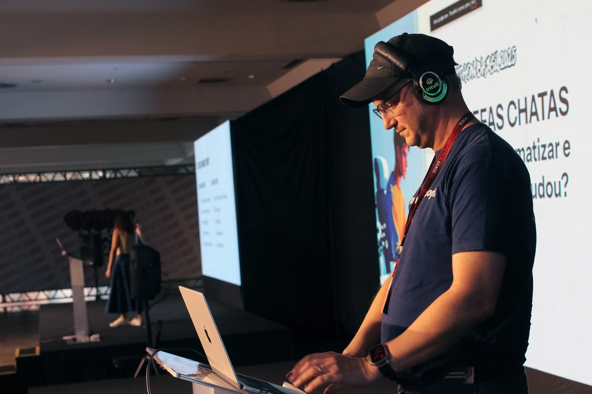
Vibe Coding viralizou recentemente e descreve um novo jeito de criar software: desenvolver um aplicativo inteiro apenas conversando com IA, sem digitar código manualmente.
O programador deixa de ser um "digitador de código" e passa a atuar como diretor ou arquiteto. Você dita o ritmo, as ideias e o visual (a "vibe"), enquanto a IA cuida de toda a parte técnica, da sintaxe e da correção de bugs.
Vibe Coding acontece sempre que você está direcionando e não digitando, permitindo que a IA cuide da implementação enquanto você foca em visão e verificação.
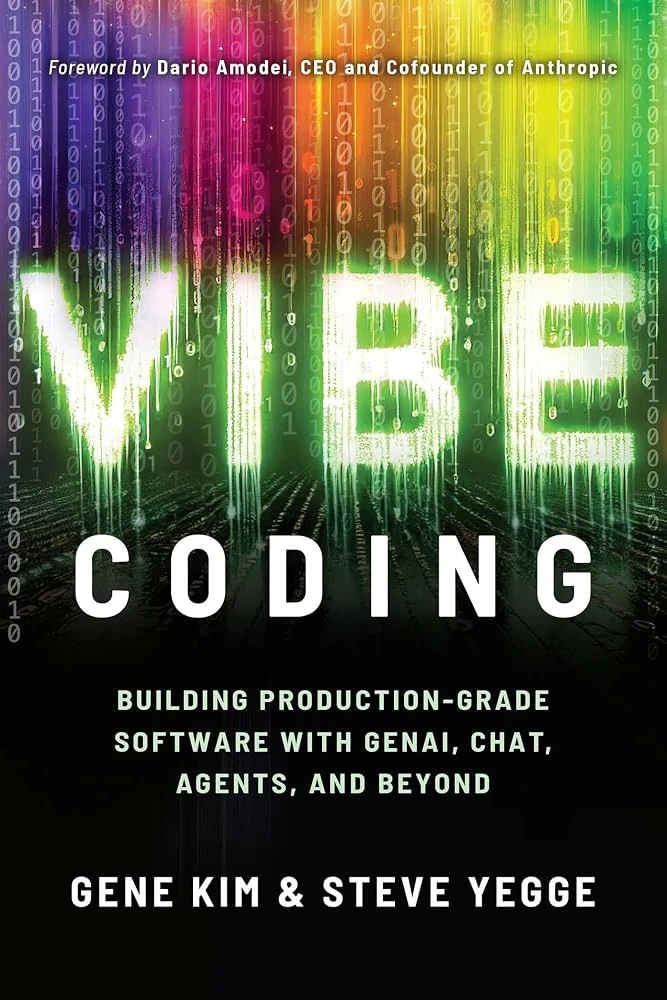
Existe um novo tipo de programação que eu chamo de 'Vibe Coding', onde você se entrega completamente à vibe, abraça exponenciais e esquece que o código sequer existe. [...]
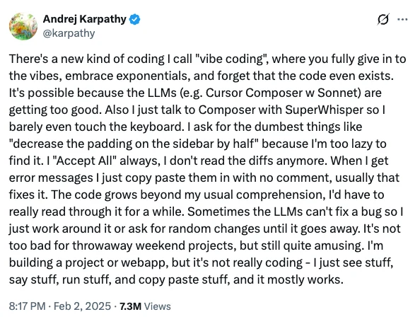
Eu 'Aceito tudo' sempre, eu não leio mais diffs [...]
O código cresce além da minha compreensão [...]
[...] eu apenas contorno o bug e peço mudanças aleatórias até que ele suma.
A principal diferença está na percepção de responsabilidade técnica.
A diferença não é se você usa IA — é como os resultados são verificados.
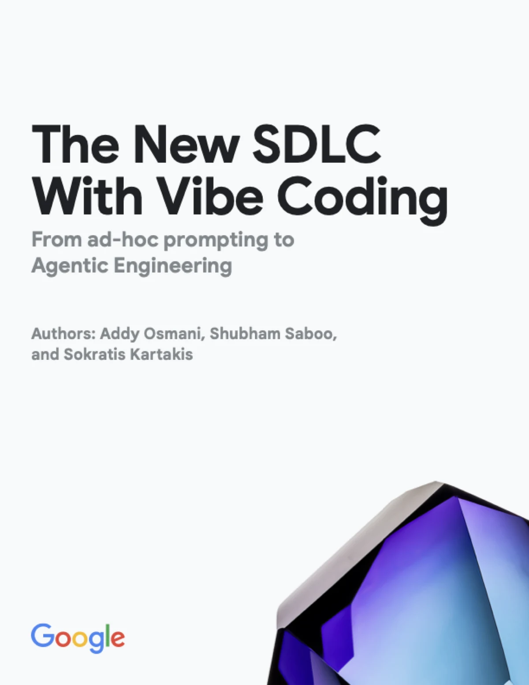
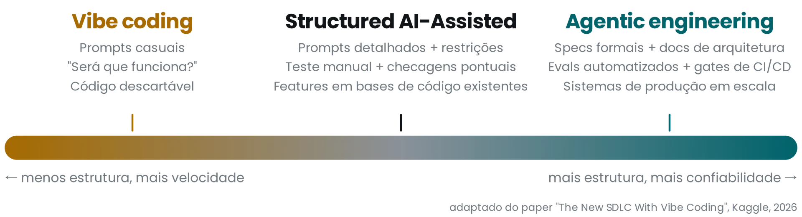
A posição correta depende do que está em jogo.
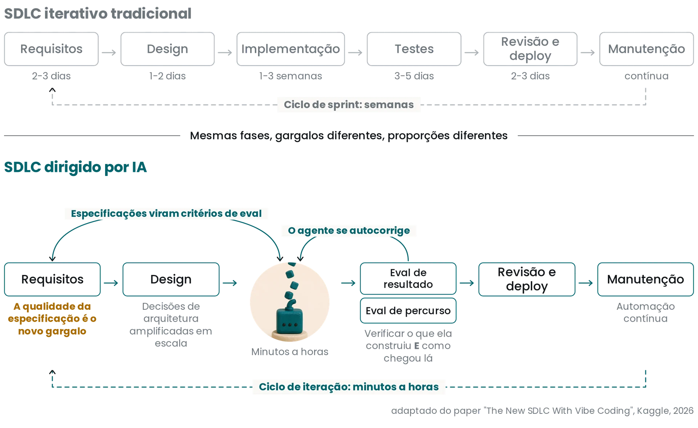
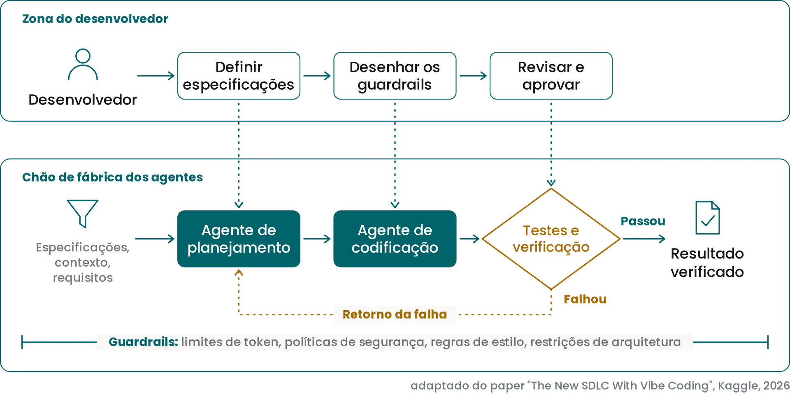
Delegar implementação ≠ delegar responsabilidade.
Você é responsável pelo resultado final.
Se o seu trabalho envolve qualquer uma dessas coisas, a IA está mudando todo trabalho relacionado a conhecimento.
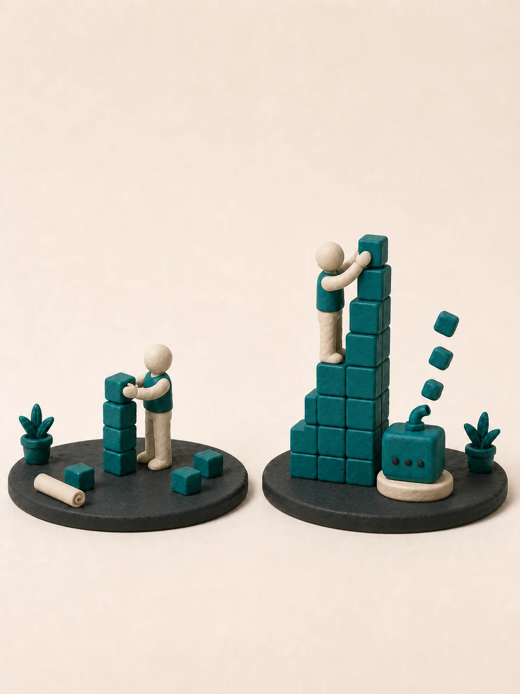
Pessoas > Tecnologia
Pessoas > IA
Baratear ou tornar mais eficiente o uso de um recurso pode levar a uma maior demanda por esse mesmo recurso.
Vão existir mais empregos para desenvolvedores, não menos.
Mais pessoas ⇒ menos tempo resolvendo o problema, mais tempo coordenando.
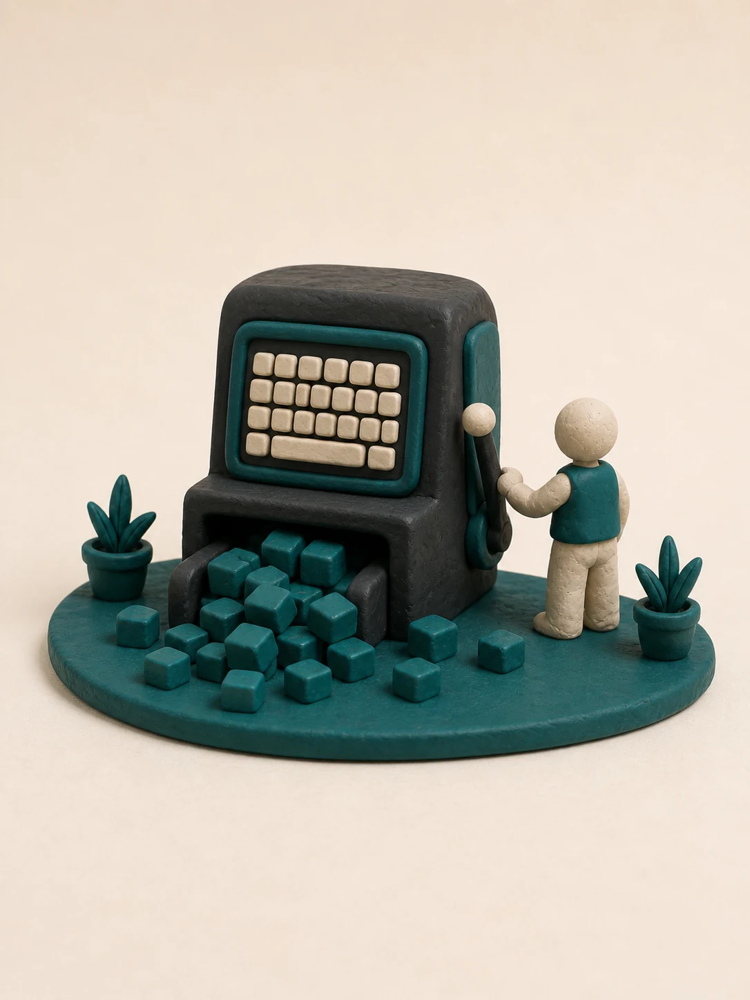
O desenvolvimento concorrente torna possível adiar o compromisso até o último momento oportuno: o momento em que a falta de decisão elimina uma alternativa importante.
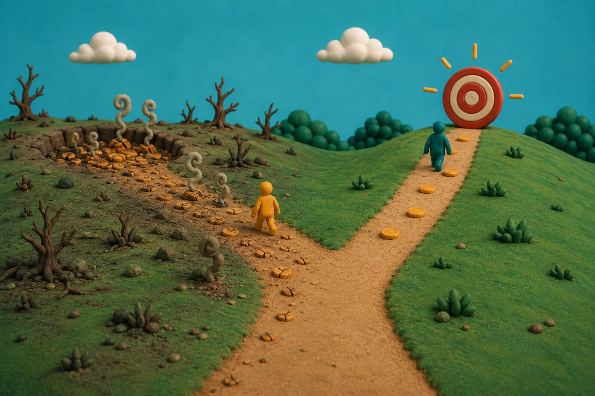
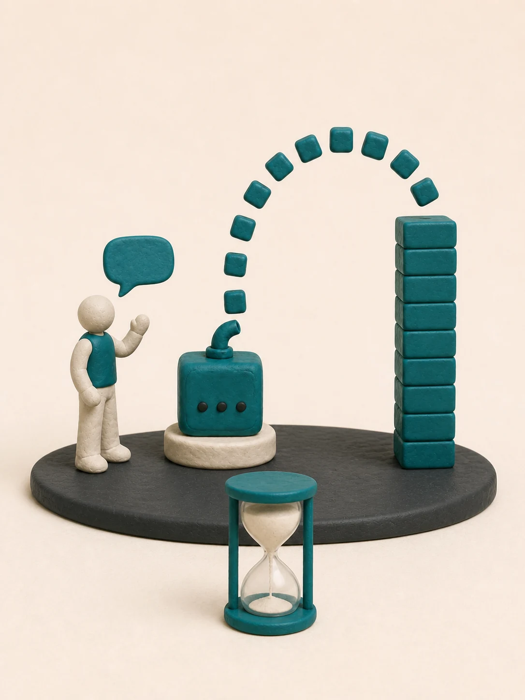
Mas em 2024 cada 25% de aumento na adoção de GenAI vinha junto com -7% em estabilidade e -1,5% em velocidade de entrega.
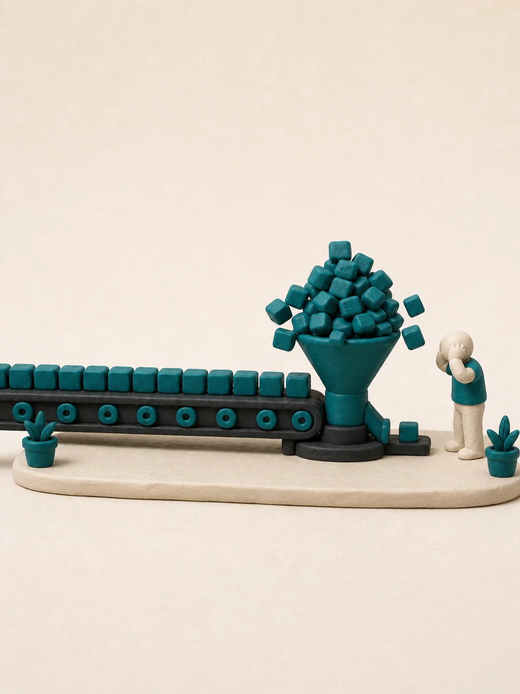
e o resto do quadro em 2026
Ser eficiente é fazer do jeito certo. Ser eficaz é fazer a coisa certa.
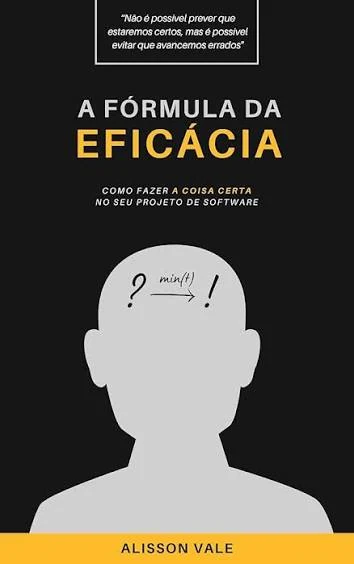
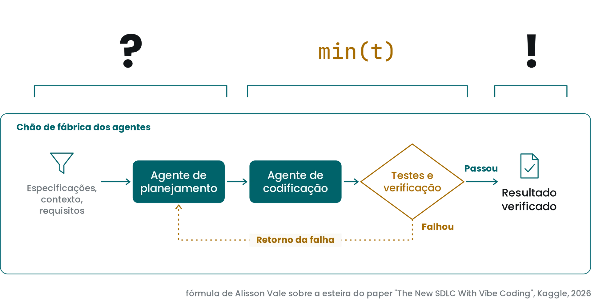
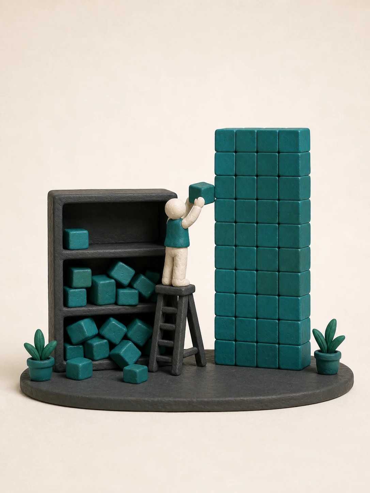
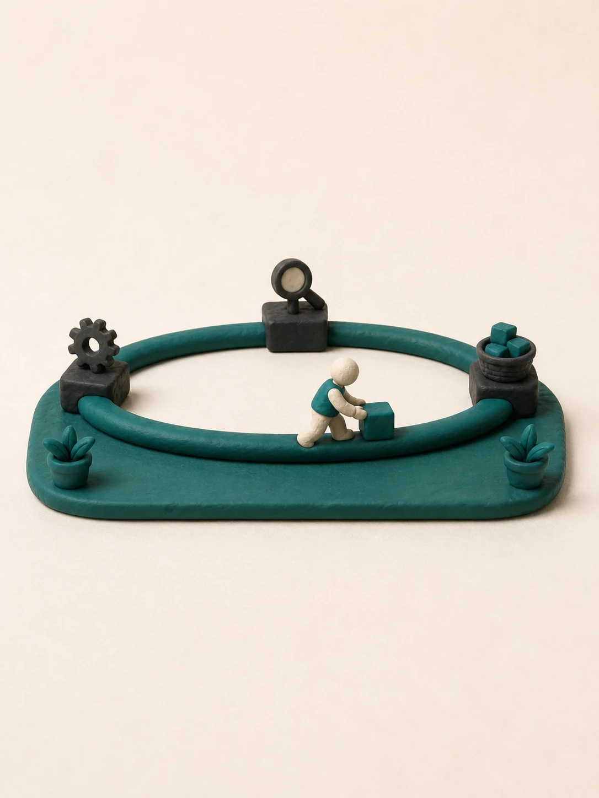
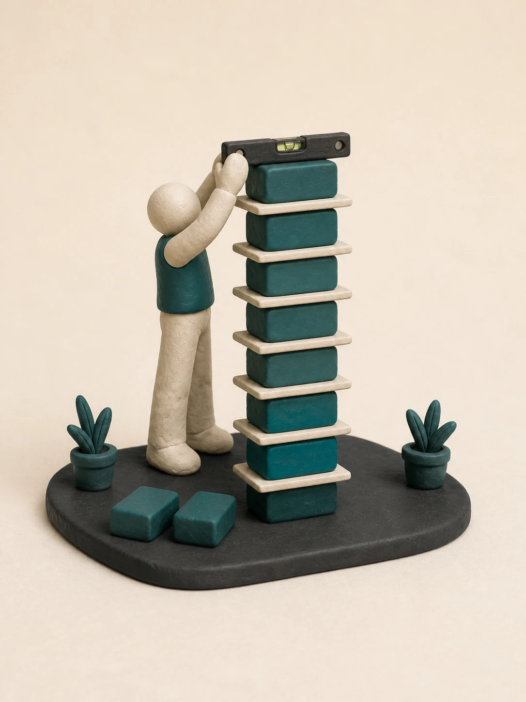